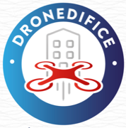

Nettoyage par drone

Prestataire Drone — BTP & Collectivités
Sans échafaudage. Sans interruption d'activité. Partout en France, pour le BTP, les collectivités et la rénovation de façade.
Requis
d'Opération
Trajectoire
Opérationnelle
Premier Chiffrage
Un ordre de grandeur avant même l'échange.
Indiquez la surface à traiter pour obtenir un premier cadrage budgétaire indicatif — utile pour préparer un dossier de cahier des charges ou comparer des scénarios. Le devis ferme est établi après étude de votre site ou de votre marché.
- Sans engagement
- Estimation transparente
Solutions par secteur
Une flotte de précision, déployée partout en France.
Que vous gériez un patrimoine public, un chantier BTP ou un portefeuille de façades à rénover, Exadrone Enterprise s'intègre à votre processus — du cahier des charges à la livraison.
Collectivités & Mairies
Entretien des bâtiments publics, écoles et monuments — compatible marchés publics.
Découvrir → 02Entreprises du BTP
Cartographie de chantier, photogrammétrie de suivi et inspection de bardage à grande échelle.
Découvrir → 03Rénovation de Façade
Sous-traitance drone pour vos chantiers de ravalement — partenariat technique, pas de concurrence commerciale.
Découvrir → 04Marchés Publics
Ce qu'il faut prévoir pour intégrer Exadrone Enterprise à votre appel d'offres : pièces, garanties, références.
Découvrir →Des Preuves, Pas des Promesses
Le même toit. Un seul passage autonome.
Systèmes Aériens Autonomes
Précision en altitude.
Notre système aérien autonome nettoie les façades et les toitures par drone, pour les bâtiments inaccessibles à l'échafaudage et qui ne tolèrent aucune interruption d'activité.
Le Drone
Conçu pour l'altitude.
Pensé pour le contrôle.
Notre drone Exadrone Enterprise fonctionne sur un système de vol en boucle fermée — télémétrie en temps réel, correction de trajectoire anti-collision et redondance de sécurité à chaque niveau. Rien n'est laissé au vent.
Processus
Du relevé à la validation finale.
Relevé de Site & Cartographie
Le scan LiDAR génère un modèle précis au millimètre de chaque surface, arête et obstacle.
Calibration de la Trajectoire de Vol
Le tracé autonome est calculé puis vérifié selon le vent, l'espace aérien et les contraintes d'accès.
Nettoyage de Précision
Le drone intervient — pression, fluide et distance ajustés en temps réel selon chaque surface.
Vérification Qualité
L'imagerie post-nettoyage est compilée dans un rapport de vérification livré sous 24 heures.
Fiabilité
La confiance des bâtiments
que vous ne pouvez pas risquer.
Conçu pour les équipes techniques qui mesurent leur réussite en zéro incident, pas seulement en vitres propres.
-
Nous couvrons l'intégralité de nos interventions avec une assurance Responsabilité Civile Professionnelle spécifique à l'aéronautique. Vous êtes totalement protégé contre le moindre imprévu, garantissant une tranquillité d'esprit absolue.
-
Nos équipes opèrent dans le plus strict respect de la réglementation européenne (EASA). Titulaires des habilitations avancées BAPD et CATS, nous sommes qualifiés et autorisés à intervenir dans les scénarios de vol les plus complexes.
-
Nous utilisons des solutions de nettoyage haute performance, appliquées dans le respect des normes environnementales. Notre agrément Certibiocide garantit un dosage maîtrisé, inoffensif pour vos matériaux.
-
Éliminez les risques de chute et les coûts de location de nacelles. Notre flotte d'hexacoptères intervient à distance et en toute sécurité, sans bloquer les accès ni gêner les occupants.
-
Grâce à nos systèmes assistés par GPS, le traitement est ciblé au centimètre près. Nos interventions sont jusqu'à cinq fois plus rapides qu'une méthode traditionnelle, pour une disponibilité immédiate.
Notre équipement
Matériel professionnel et certifications
Éco-responsabilité
Une technologie propre,
pour un avenir qui l'est aussi.
Chaque intervention par drone réduit mécaniquement l'empreinte sur le chantier : moins de matériel lourd, moins de produits chimiques, moins de risques pour les équipes. Face aux exigences croissantes en matière de RSE et de bilan carbone, Exadrone Enterprise propose une alternative concrète et mesurable.
- Zéro échafaudage Aucune structure temporaire à monter et démonter. Moins de déchets de chantier, moins d'empreinte physique sur le site.
- Produits réduits au strict nécessaire Application ciblée par drone, zone par zone. Sans sur-traitement chimique ni ruissellement dans les sols ou les eaux pluviales.
- Empreinte carbone allégée Moins de camions, moins de matériel lourd, moins d'émissions. Une logistique réduite à l'essentiel.
- Sécurité maximale pour les équipes Aucun opérateur en hauteur, zéro risque de chute. La protection des personnes est intégrée à la méthode, pas ajoutée en option.
En Intervention
Le drone, sur le terrain.

Déployé Dans
Contactez-nous
Prêt à intégrer le drone à vos chantiers.
Disponible partout en France.
Parlez-nous de votre site, de votre chantier ou de votre marché. Nous vous répondrons avec un plan de déploiement personnalisé sous deux jours ouvrés.